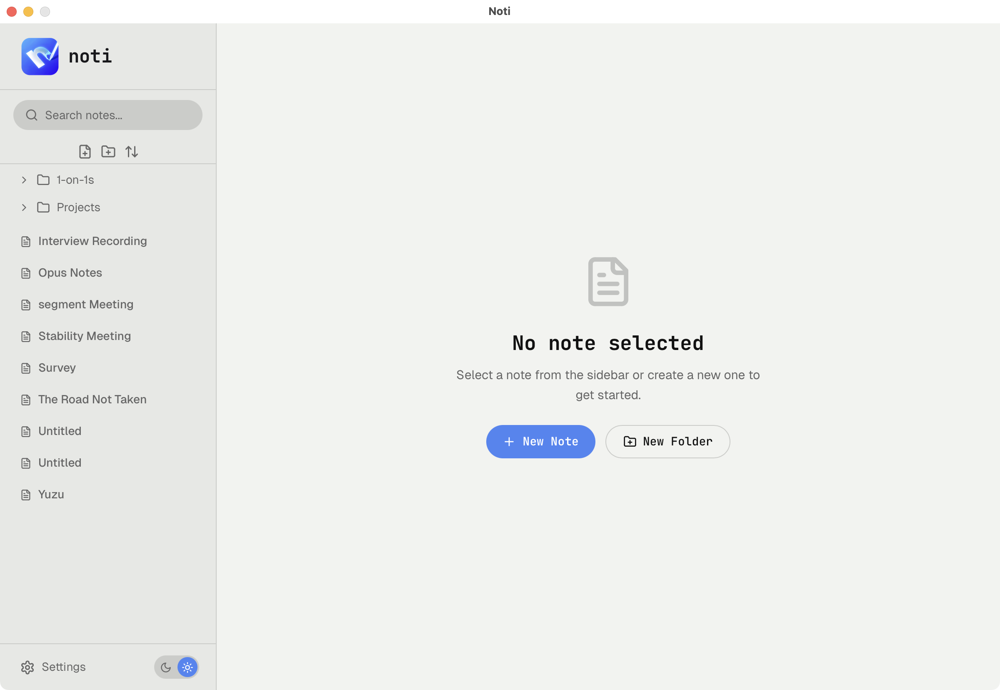
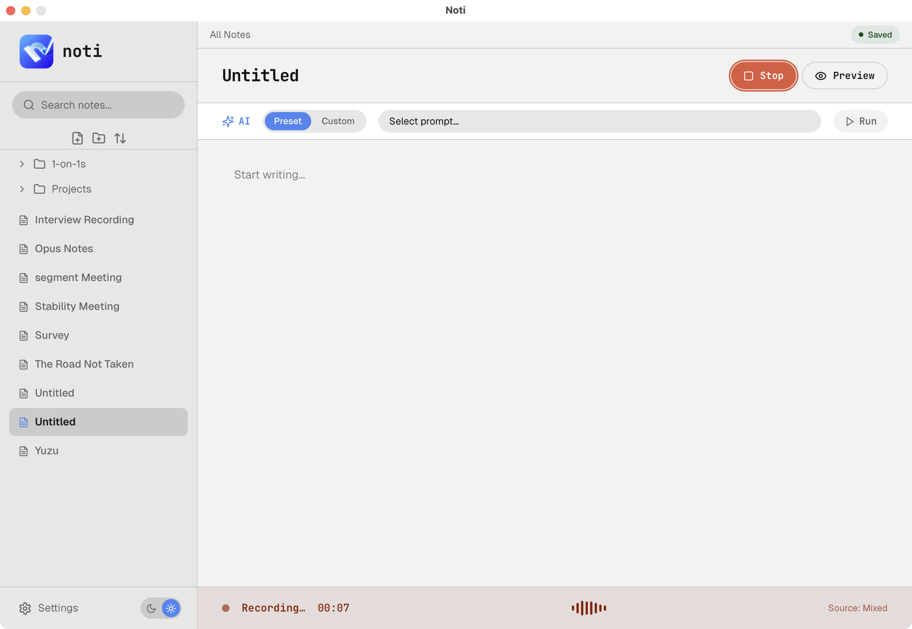
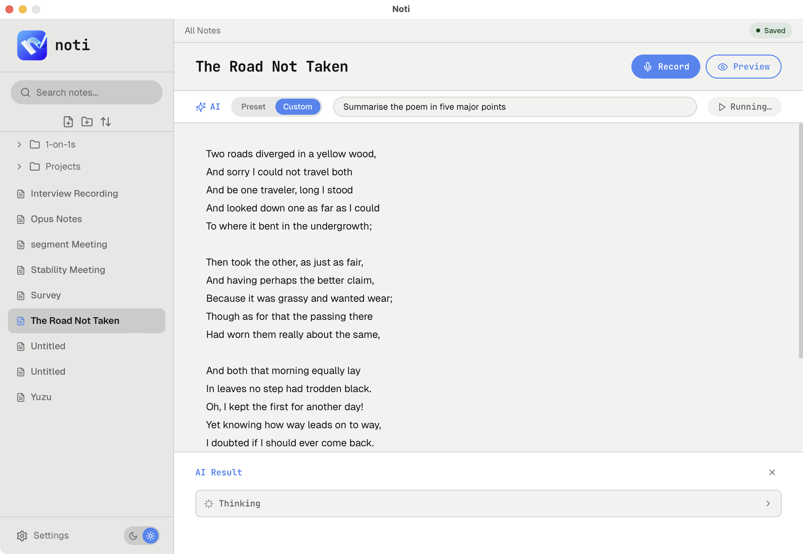
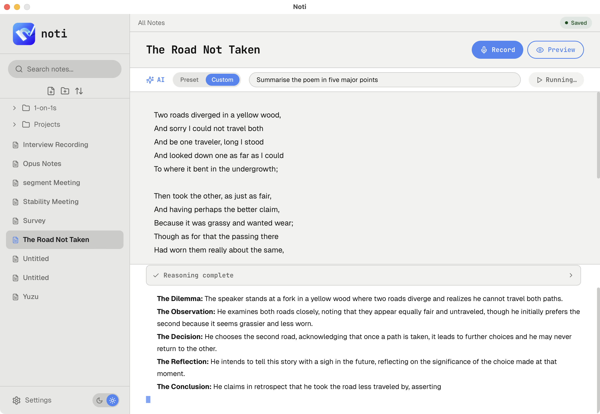

Live capture
Record meetings, calls, or quick thoughts without leaving the note workspace.
Audio intelligence for desktop notes
NotI turns raw conversations into transcripts, summaries, and action-ready notes without sending you through a maze of tabs, tools, or disconnected workflows.

Record meetings, calls, or quick thoughts without leaving the note workspace.
Check generated text against the source before you turn it into something final.
Pull decisions, highlights, and next steps out of longer conversations quickly.
Rewrite, expand, or condense notes once the important context is already captured.
Workflow
Each stage is built to keep context intact while moving from raw conversation to clean, usable notes.
Start with the source material instead of trying to summarize while listening.
Convert spoken context into searchable text you can inspect and revise.
Identify decisions, summaries, and action items without replaying the full conversation.
Refine the result into a clean note ready for follow-up, archival, or sharing.
Screens
The product stays in one environment while the job changes from capture to analysis to refinement.



Download
Install the latest desktop build from GitHub Releases and start capturing audio, transcripts, and structured notes in one local workflow.